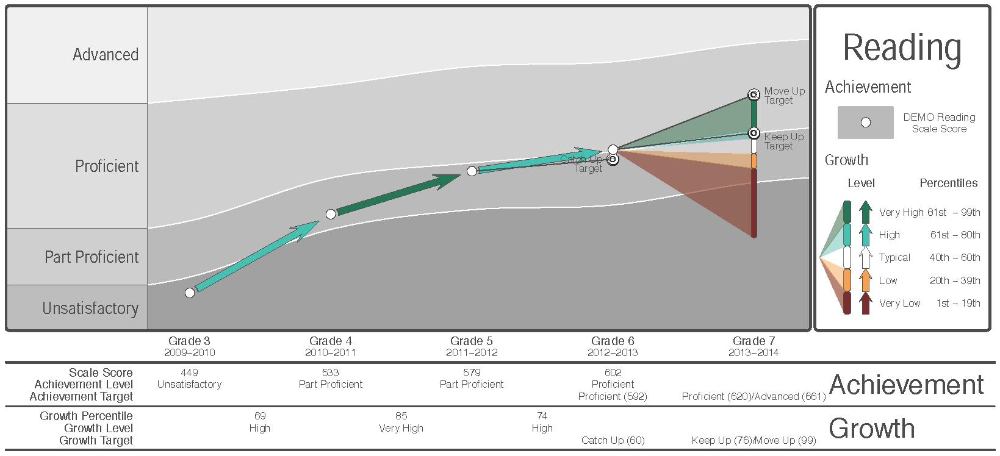

Damian Betebenner, Center for Assessment Adam VanIwaarden, University of Colorado, Boulder Ruhan Circi Kizil, University of Colorado, Boulder
Damian Betebenner, Center for Assessment Adam VanIwaarden, University of Colorado, Boulder Ruhan Circi Kizil, University of Colorado, Boulder
Software will eat the world!